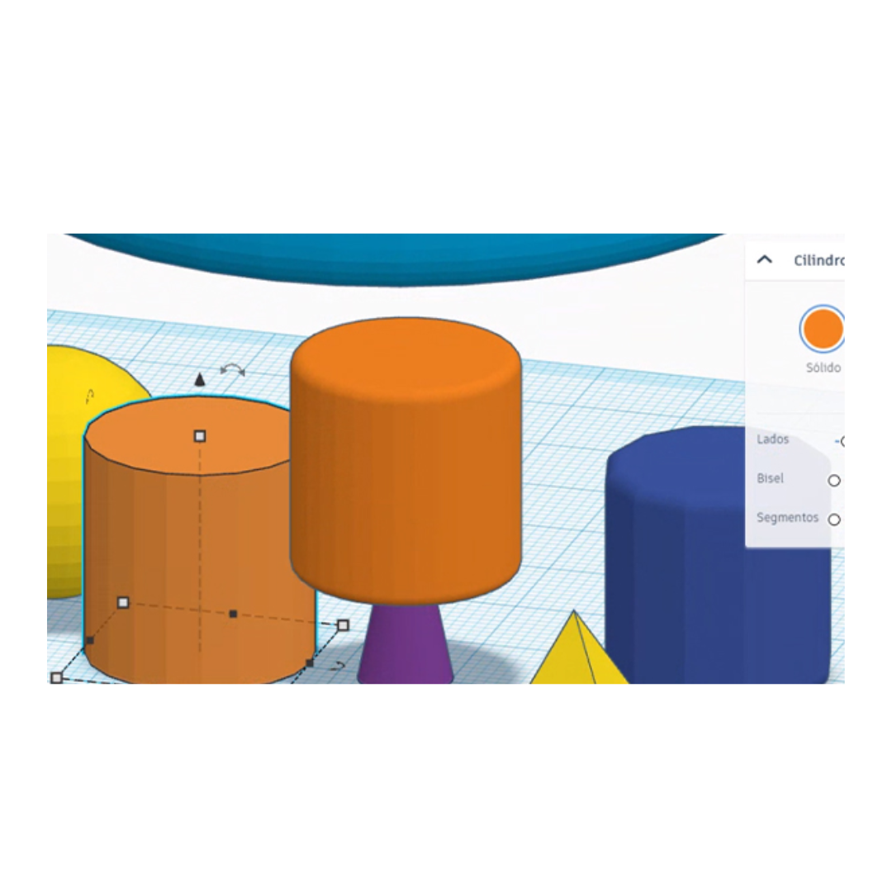
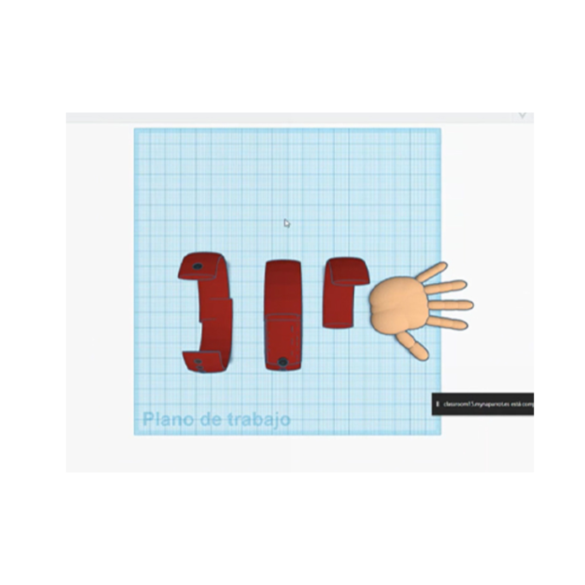
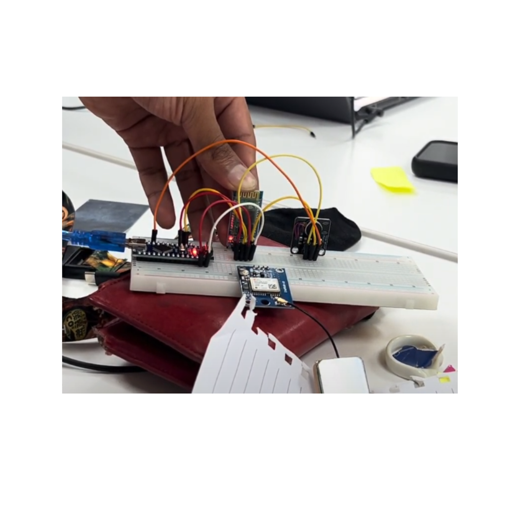
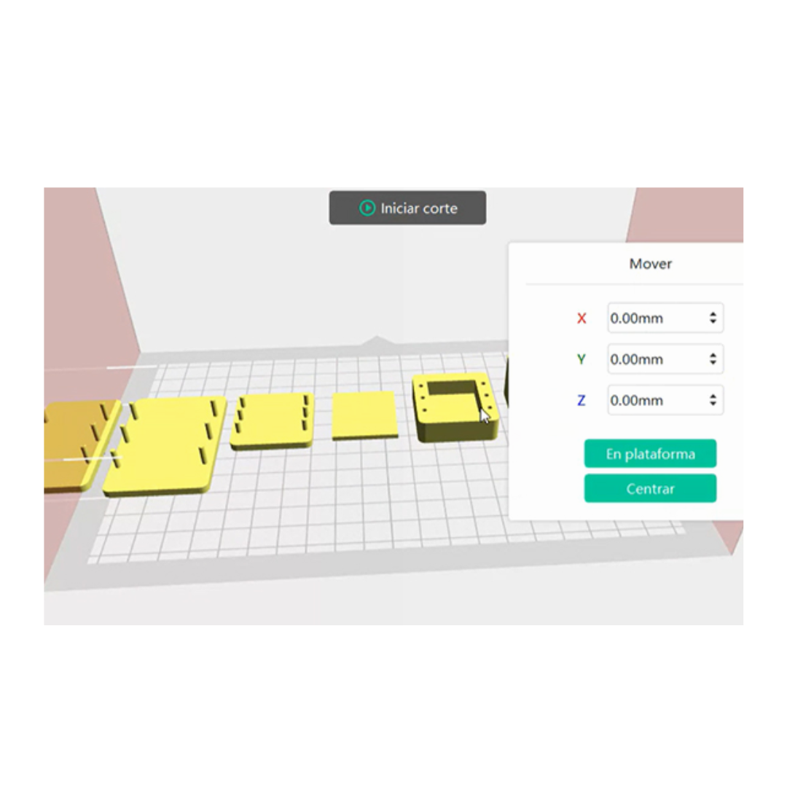
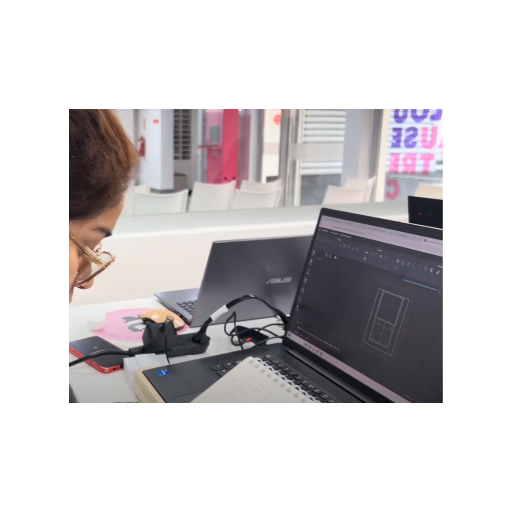
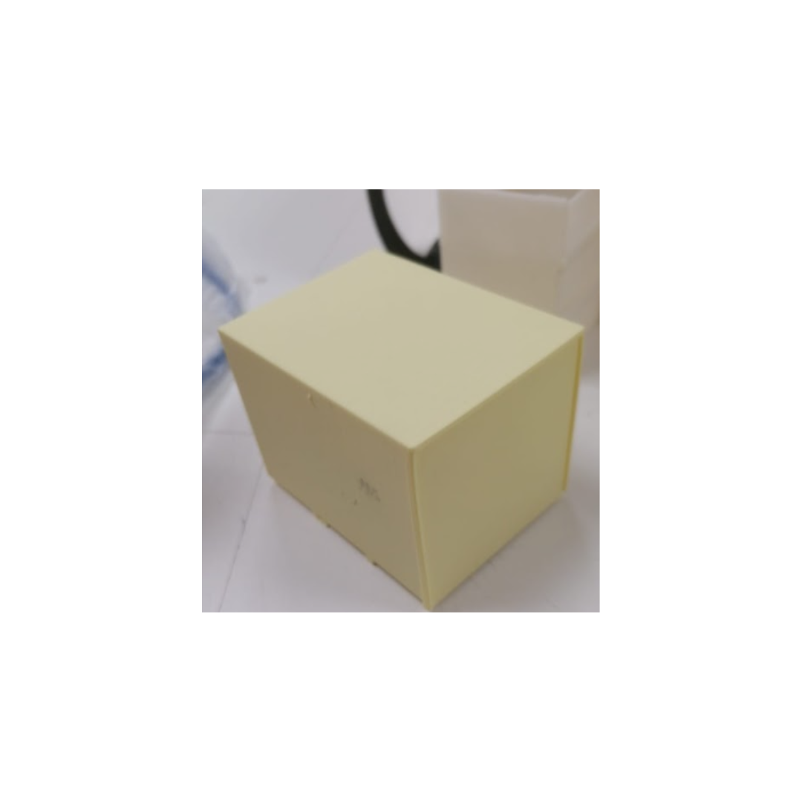
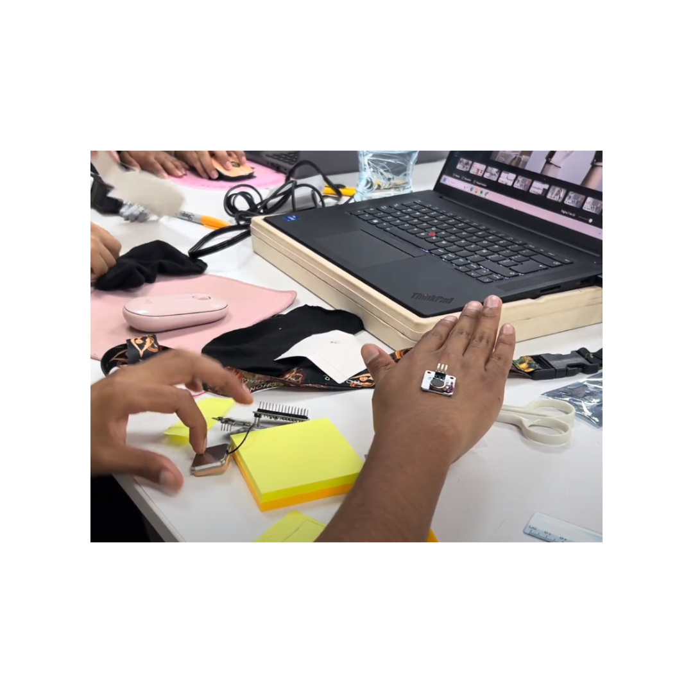
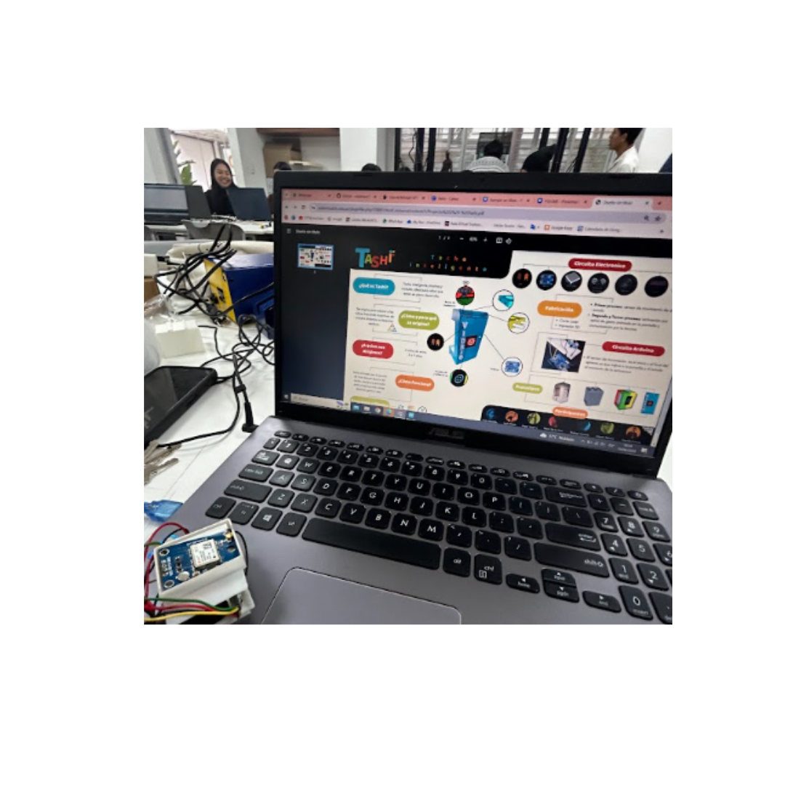
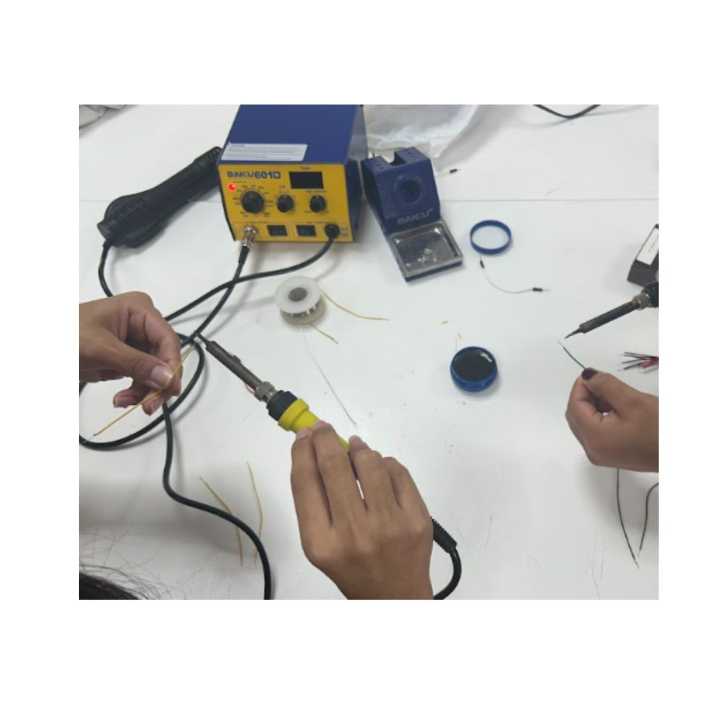
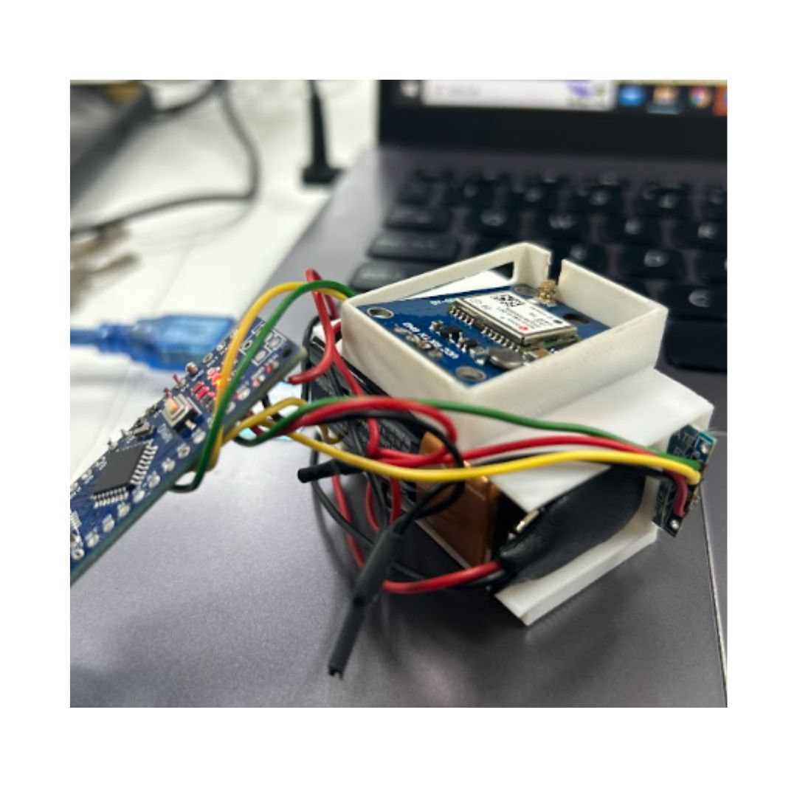

Hoy en la clase, empezamos con una introducción sobre la resistencia y cómo calcular su valor. Después, el profesor nos mostró el programa Arduino,
explorando su interfaz y algunos códigos. Para poner en práctica lo aprendido, construimos circuitos usando los materiales asignados en clase.

En la clase de hoy vimos un tema interesante: la fabricación digital. Además de los conceptos, revisamos ejemplos de herramientas y software de diseño.
Sin dejar de lados los conceptos esenciales: CAD, CAM y CAE. Para cerrar, el profesor nos enseñó algunos ejemplos de formas en 3D en Tinkercad.


El profesor hizo un repaso del arduino y nos enseño mas con el tema ,con mis compañeras estuvimos
realizando los ejercicios que el profesor nos dejo en clase ,tambien al final presentamos todo los proyectos de nuestro grupo para ser cual era mas viable de todas .
En la clase de hoy, el profesor nos guió en la creación de nuestro prototipo en
3D usando Tinkercad. Después, cada grupo pudo convertir su boceto en un modelo 3D,
ya sea en Tinkercad u otro programa especializado para prototipado en 3D.

Rehicimos el circuito porque la programación no funcionaba bien. Al mismo tiempo, rediseñamos las piezas 3D para que encajaran mejor.

Nos enfocamos en revisar los prototipos 3D para luego imprimirlos. Sin embargo, tuvimos problemas con nuestro diseño
y al final decidimos cambiarlo por uno nuevo. Antes de terminar la clase, el profesor nos explicó cómo resolver nuestro entregable.

Con mi equipo nos dividimos para avanzar más rápido con nuestro proyecto, ya que teníamos problemas con el diseño debido a que las piezas no encajaban correctamente.
Mientras mis compañeras corregían las medidas, mi compañera y yo trabajábamos en el entregable y preparábamos las preguntas para la entrevista que debíamos realizar.

Una vez que nuestra impresión 3D estuvo lista, comenzamos a encajar las piezas. Lo más emocionante y nuevo fue soldar junto con mis compañeras, para luego probar si funcionaba nuestro prototipo.
Al principio nos costó un poco, pero una vez terminado, quedamos satisfechas con el resultado. Además, realizamos algunos ajustes en nuestra programación.

En esta clase, el profesor profundizó en temas nuevos como el Internet de las Cosas (IoT) y la Industria 4.0. Exploramos su historia, evolución y algunos ejemplos que nos ayudaron a entender mejor estos conceptos.
También vimos la industria IoT y sus usos más comunes. Como adelanto, el profesor mencionó que en la próxima clase escanearíamos un objeto en 3D.

Junto a mis compañeras, intentamos probar nuestro prototipo, pero se nos dificultó mucho por la neblina.
Después, escaneamos un muñequito que llevamos para un trabajo grupal. Fue una experiencia divertida
y complicada. Al principio no logramos obtener un buen resultado, pero después de varios intentos,
conseguimos un escaneo 3D exitoso utilizando una app.

Empezamos la clase resolviendo dudas sobre el entregable final. Luego, pasamos
a la teoría sobre la inteligencia artificial, profundizando en su definición y sus bases.
El profesor nos explicó con algunos ejemplos para hacerlo más fácil de entender. Lo que más
me llamó la atención fueron los sistemas que actúan como humanos.

En cuanto llegamos a clase, nos pusimos a armar nuestro prototipo para probarlo.
Aunque tardamos un poco porque el GPS no se conectaba, al final funcionó. Esto nos llevó a
hacer algunos cambios en el diagrama de flujo y la programación. También aprovechamos para definir algunos puntos del entregable.
